| Nom
du défaut |
Représentation
du défaut |
Description
du défaut |
Causes |
| Points
noirs |
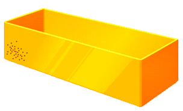 |
Petits
points noirs apparaissant sur la
surface des pièces moulées. |
-
Pollution de la matière avant transformation.
- Décomposition locale de la matière due
à une
stagnation ou une surchauffe de la matière dans le fourreau.
|
| Brûlure
ou
Coup de feu |
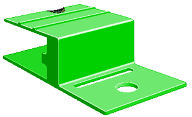 |
Il
s’agit d’une auto-inflammation d’air
ou de gaz monomère qui n’ont pu
s’échapper du moule lors de l’injection,
induisant sur les pièces des
traces de matière carbonisée. |
-
Events bouchés ou insuffisants
(mauvaise ventilation du moule)
- Vitesse d’injection trop élevée par
rapport aux évents.
- Force de fermeture trop élevée
Remarque
: Ne
jamais toucher la vitesse d’injection quand ce
défaut
apparaît en cours de production. |
| Etat de
surface |
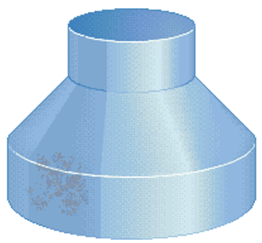 |
L’aspect
de la pièce
apparaît trop brillant ou à l’inverse
trop mat. |
Brillant
:
- Température du moule et de la matière trop
élevées
- Vitesse d’injection trop élevée
- Présence d’agent démoulant
Mat :
- Température du moule et de la matière trop
basses
- Events sales
- Vitesse d’injection trop basse
- Empreinte du moule sale
|
| Bulles
|
|
Il
existe 2 cas de bulles :
a.
Bulles de vide :
Elles se caractérisent par une dépression en
surface car la bulle est un phénomène de retrait
interne (endroits de surépaisseurs).
b.
Bulles de gaz :
Elles se traduisent par un léger gonflement dans la zone de
la bulle. La cause peut être une décomposition
locale induisant des gaz qui, à l'injection, forment ces
poches ou, au moment du dosage, la machine a avalé de l'air
en même temps que les granulés. Si on perce ces
bulles dans l'eau, un gaz s'échappe au moment de la
perforation. |
- Compactage
insuffisant lors du maintien
- Humidité dans la matière
- Décomposition locale formant des gaz dans le fourreau (gaz
inclus)
- Lors du dosage, la vis avale de l’air en même
temps que les granulés
- Contre pression trop faible (mauvais dosage) |
| Délamination |
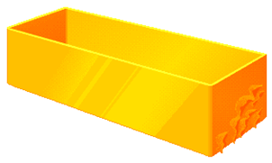 |
La
pièce présente à la rupture des
stratifications, c’est à dire des
couches de matière ressemblant à des feuilles
n’adhérant pas les unes
aux autres. |
-
Mélange de matière
- Vitesse d’injection trop rapide faisant une rupture par
cisaillement
- Température du moule trop froide ; la peau se solidifie
trop rapidement par rapport à la veine chaude. |
| Traces de
flux
(traces d’écoulement) |
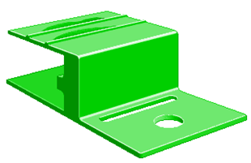 |
Des
vagues d’écoulement concentriques au point
d’injection apparaissent
sur les pièces moulées dans la zone de fin de
remplissage ou dans les
zones de faibles épaisseurs. |
-
Température moule trop basse
- Température matière trop basse
- Vitesse d’injection trop faible |
| Givrage
|
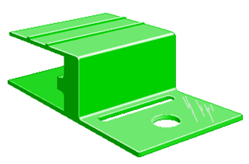 |
Le givrage
apparaît comme des
traces brillantes ou argentées dans le sens de
l’écoulement de la matière. |
-
Humidité dans la matière (mauvais
étuvage)
- T° pied de trémie trop faible.
- Décompression trop importante
- Contre pression trop faible |
| Bavures |
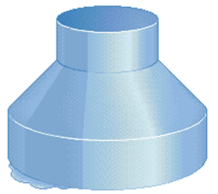 |
Fuite de
matière liquide qui en
se solidifiant, laisse apparaître sur
la pièce moulée des excédents de
matière.
On rencontre en général 2 types de bavures:
a. bavure par ouverture du moule (la force dans le moule devient
supérieure à la force de verrouillage) ou par
recul des tiroirs;
b. bavure qui apparaît par usure du moule ou par manque de
nettoyage. |
-
Force de verrouillage insuffisante
- Plan de joint sale
- Mauvais ajustement des éléments de
l’empreinte
- Pression matière dans le moule trop importante |
| Incomplet |
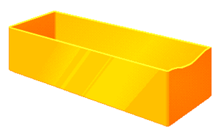 |
Manque de
matière dans les zones
opposées au point d’injection ou dans
des petits détails fins de la pièce. |
-
Température de la matière trop basse (si
commutation par pression)
- Dosage irrégulier
- Commutation trop tôt
- Seuil d’injection partiellement obturé
- Fuite entre buse moule/buse machine
- Events bouchés |
| Jet
libre |
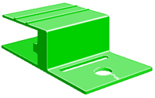 |
Petite
trace à la surface de la pièce apparaissant au
point d’injection dans le sens de
l’écoulement. |
- Vitesse
d’injection trop rapide
- Seuil d’injection sous dimensionné
- Pression d’injection trop élevée
- Matière trop froide
- Moule trop froid
|
| Déformation
ou
gauchissement |
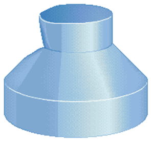 |
A
l’éjection de la pièce, celle-ci nous
apparaît présentant des défauts
géométriques du type gauchissement,
cintrage… |
-
Déformation lors de
l’éjection de la pièce (nombre
d’éjecteurs insuffisants ou mal
positionnés)
- Pièce éjectée trop chaude (retrait
important hors du moule)
- Irrégularité des épaisseurs de
parois
- Matière trop contrainte lors du maintien
|
| Ligne de
soudure |
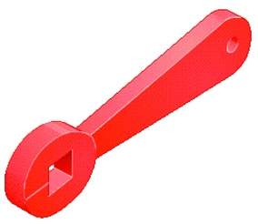 |
Les
lignes de soudure apparaissent comme de petites lignes de faible
épaisseur se situant souvent derrière un trou.
Dans ce cas elles sont
inévitables (recollement de flux de matière) mais
peuvent être
atténuées par des évents ou
déplacées en modifiant certaines
épaisseurs
de la pièce ou la position du point d’injection. |
-
Recollement de flux matière derrière une broche
ou un noyau
- Températures matière et moule insuffisantes
- Vitesse d’injection trop faible
- Events sales ou insuffisants
- Emplacement du point d’injection mal choisi |
| Infondus
|
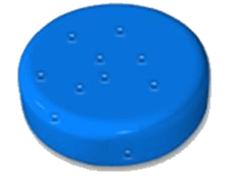 |
Présence
de nodules translucides et non colorés dans la
matière ayant la taille approximative
du granulé de matière. |
-
Granulométrie
hétérogène (vierge /
rebroyé)
- Température de la matière et de
l’outillage trop faible
- Malaxage insuffisant pendant la plastification |
| Marques
éjecteurs
ou
Ejection difficile |
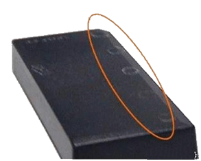 |
a. Les
éjecteurs déforment la
pièce provoquent des auréoles blanches
(cristallisation par déformation) ou perforent la
pièce.
b.
La pièce reste au bout de l’éjecteur.
moule |
Cas
de déformation ou perforation
- Surface insuffisamment refroidie
- Paroi trop mince
- Surface d’éjection insuffisante
- Ejecteur mal disposé par rapport à
l’effort
- Pentes de démoulage insuffisantes
Cas
où la pièce reste au bout de
l’éjecteur
- Éjecteur dépassant le niveau de surface de
l’empreinte pendant l’injection |
| Coloration
hétérogène |
|
Certaines
zones de la pièce ont des traînées
moins colorées ou de couleur différente. |
-
S’il s’agit de zones
moins colorées, le mélange matière
colorant est insuffisant
- S’il s’agit de zones de couleur
différentes, le colorant est en partie
décomposé |
| Jetting
|
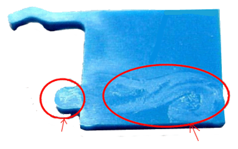 |
Un
jet
de matière partant du seuil est visible à
l’intérieur des pièces transparentes ou
en
surface des pièces opaques. |
Absence
de liaison intermoléculaire entre le jet de plastique et la
matière environnante. |
| Peau
d’orange |
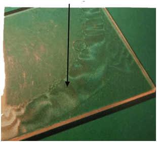 |
Aspect
granuleux de la surface. |
Défaut
d’adhésion de la matière du moule du
à la présence de liquide à la surface
du moule. |
| Retassures |
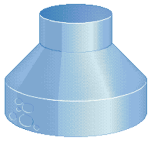 |
Petites
crevasses, rides ou dépressions présentes
à la surface de la
pièce. En effet, quand on injecte un matériau
chaud, celui-ci est
dilaté. Quand il se refroidit, il se rétracte
créant des retassures
liées à un phénomène de
dépression interne. |
-
Maintien en pression trop faible pour compenser le retrait
- Commutation trop tôt
- Températures moule et matière trop
élevées
- Epaisseurs de la pièce non homogènes |
| Cote
trop forte |
|
Dimensionnellement,
la pièce moulée, une fois son retrait
effectué, ne correspond pas au cahier des charges.
|
-
Températures moule et
matière trop basses
- Compactage matière excessif (pression de maintien trop
élevée)
- Temps de refroidissement en moule froid excessif
|
| Cote
trop faible |
|
Dimensionnellement,
la pièce
moulée, une fois son retrait effectué, ne
correspond pas au cahier des charges |
-
Températures moule et
matière trop basses
- Compactage matière excessif (pression de maintien trop
élevée)
- Temps de refroidissement en moule froid excessif
|
| Goutte
froide |
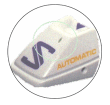 |
C’est
une trace plus ou moins rectiligne qui prend naissance au niveau
du seuil d’injection et se termine par une marque nette de
forme
variable.
L’origine du défaut est un bouchon de
matière froide venant de la buse. |
-
Contre-cône de buse
détérioré
- Etanchéité buse moule / machine insuffisante
- Busette trop reculée ou pointe de busette HS
- Température busette, moule, buse trop froide
- Pas assez de décompression avant dosage
|
| Hésitation |
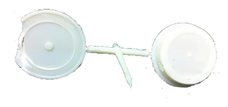 |
a. La
pièce est incomplètement remplie alors que le
dosage suffit
b. La partie
incomplète de la pièce est dans une zone ne
correspondant
pas à la fin normale du remplissage.
|
- Fortes
variations de la section d’écoulement
- Seuil d’injection mal situé
- Températures moule et matière insuffisantes
- Vitesse d’injection trop faible
|
| Fragilité |
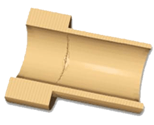 |
Les
liaisons moléculaires ne se reconstituent pas
entièrement, la pièce
moulée devient cassante sous contraintes. |
- une mauvaise
qualité des
composants
- une mauvaise qualité du recyclage
un défaut d'étuvage
- une surchauffe de la matière
des contraintes importante à l'entrée dans les
empreintes |